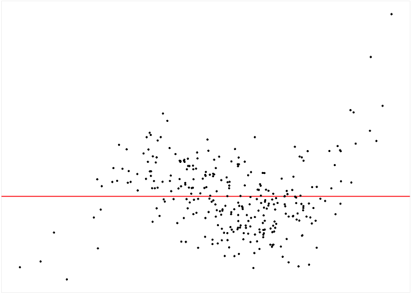

The goal of autovi is to provide tools for conducting auto visual inference.
Installation
You can install the development version of autovi like so:
remotes::install_github("TengMCing/autovi")Examples
# Load keras model for predicting visual signal strength.
keras_mod <- keras::load_model_tf(here::here("temp_model/32"))
# To illustrate the use of this package we define the data generating process for data simulation.
dgp_mod <- visage::poly_model(x = visage::rand_uniform(-1, 1), sigma = 1)
# Simulate 300 observations.
this_dat <- dgp_mod$gen(300)
# Get the fitted model (`lm`) on the simulated data.
this_mod <- dgp_mod$fit(this_dat)
# Init an instance.
my_vi <- autovi::auto_vi(fitted_mod = this_mod,
keras_mod = keras_mod,
node_index = 1L)
# Have a look at the target residual plot.
my_vi$plot_resid()
# Predict the visual signal strength for the target residual plot.
my_vi$plot_resid() %>%
my_vi$vss()
#> [1] 4.414991
# Run an automatic check for the fitted model.
# We simulate 100 null data sets and 1000 bootstrapped data sets,
# and let the keras model predict the visual signal strength
# for each residual plot.
my_vi$check(boot_draws = 1000L, null_draws = 100L)
# Print the object to get a summary of the result.
my_vi
#>
#> ── <AUTO_VI object>
#> Status:
#> - Fitted model: lm
#> - Keras model: (None, 32, 32, 3) -> (None, 1)
#> - Output node index: 1
#> - Result:
#> - Observed visual signal strength: 4.415 (p-value = 0)
#> - Null visual signal strength: [100 draws]
#> - Mean: 0.1221
#> - Quantiles:
#> ╔═════════════════════════════════════════════════╗
#> ║ 25% 50% 75% 80% 90% 95% 99% ║
#> ║0.0000 0.0000 0.0000 0.0000 0.2131 0.6236 2.3753 ║
#> ╚═════════════════════════════════════════════════╝
#> - Bootstrapped visual signal strength: [300000 draws]
#> - Mean: 4.459 (p-value = 0)
#> - Quantiles:
#> ╔══════════════════════════════════════════╗
#> ║ 25% 50% 75% 80% 90% 95% 99% ║
#> ║4.323 4.457 4.611 4.644 4.733 4.807 4.934 ║
#> ╚══════════════════════════════════════════╝
#> - Likelihood ratio: 1.966 (boot) / 0 (null) = Inf
# Draw a summary plot.
my_vi$summary_plot()